|
|
| shrimps text index | photo index |
| Phylum Arthropoda
> Subphylum Crustacea > Class
Malacostraca > Order Decapoda
> prawns and shrimps > Family Palaemonidae |
| Peacock-tail
anemone shrimp Ancylocaris brevicarpalis Family Palaemonidae updated Jan 2020 Where seen? This chubby shrimp with black-ringed orange spots on its tail is often seen in large sea anemones on many of our shores. Usually a pair are seen in one anemone, living safely among tentacles that would otherwise sting other animals. Elsewhere, seen from 1-5m deep. It is also sometimes called the Clown anemone shrimp. It was previously Periclimenes brevicarpalis. Features: To about 4cm. Body almost transparent, especially the smaller male. Pincers long transparent with purple bars. The female is often larger and more brightly marked with more and larger white spots on the back, along the abdomen and the base of the tail. The male may be totally transparent except for the eyespots on the tail. Some also have a white tail and a white bar between the eyes like the female. In both the male and female, the tail has 5 black-ringed orange eyespots. At low tide, they are more easily spotted at night when they are still somewhat active. During the day, they often remain hidden under the anemone. |
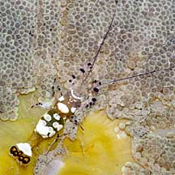 Kusu Island, May 07 |
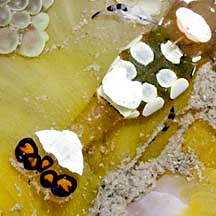 Five black-ringed orange spots on the tail. |
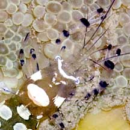 |
|
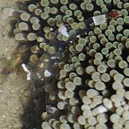 The male often smaller and more transparent. |
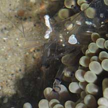 |
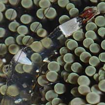 |
| Home Sweet Home: We have seen these shrimps with these large sea anemones: Giant
carpet anemones, Haddon's
carpet anemones, Magnificent
anemones, Leathery
anemone, Pizza
anemone, Bubble-tip anemone, Frilly sea anemone, Snaky anemone, Fire anemone. Rarely, False clown anemonefishes are also found together with the anemone shrimps on the same anemone. They don't seem to bother one another. Does it 'clean' fish? A filefish was once observed close to an anemone shrimp for some time. Could it be expecting the shrimp to clean it? What does it eat? Anemone shrimps do not appear to eat the host anemone or off the anemone's fluids. Instead, they are believed to shelter in the anemone for protection and may feed on left overs. The shrimps have often been seen "hanging" over the edge of their anemone home with their pincers extended. |
|
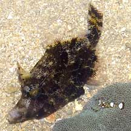 This filefish appeared to be presenting itself to the shrimp Pulau Sekudu, May 05 |
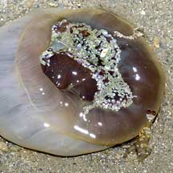 'Locked out' of its sea anemone at low tide! Kusu Island, Jul 04 |
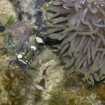 Sometimes, both anemone shrimps and anemonefishes share the same anemone. Pulau Hantu, Jul 07 |

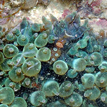 On a bubble-tip anemone Sisters Island, Dec 12 Photo shared by Loh Kok Sheng on flickr. |
| Peacock-tail anemone shrimps on Singapore shores |
On wildsingapore
flickr
|
| Other sightings on Singapore shores |
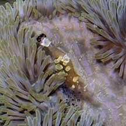 Pulau Salu, Aug 10 |
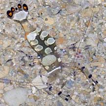 Pulau Salu, Aug 10 |
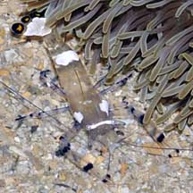 Pulau Salu, Aug 10 |
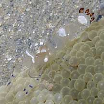 Pulau Pawai, Dec 09 |
 |
| Filmed
on Cyrene Reefs, Jul 08 anemone shrimp @ cyrene reef from SgBeachBum on Vimeo. |
| Filmed
on Cyrene Reef, Apr 10 |
| Filmed on Cyrene Reef, Mar 11 |
|
Links
References
|